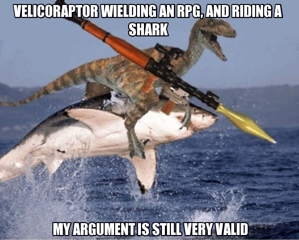
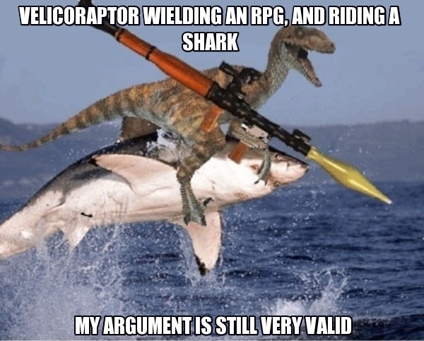

Your favorite meme almost died. Not "politicians ruining the fun for everyone" died, but, like, "left this mortal coil" died. The Verge unearthed the story about how Doge almost wasn't.

The "doge" meme has been around for a few years now, but it peaked in 2013, because doge is actually funny. If you were online at all over the last six months, you probably saw the picture of a Shiba Inu dog, labeled with non-sensical phrases in rainbowed Comic Sans. "Wow," doge says. "Such funny. So hilarious." The Internet, here represented by Imgur and Reddit, loves doge. Bloggers love doge, and bloggers hate most memes. Linguists love doge. Very few people do not love doge. It was this year's best meme by a mile, and the competition was not close.
But the dog that most often represents the doge meme nearly died a few years ago, according to The Verge's Kyle Chayka, who traced the origin of the meme. The photo of Kabosu, the adopted eight-year-old Shiba Inu, that is used most often by doge enthusiasts originated here, from 2010, on the owner's blog. Kabosu, and owner Atsuko Sato, are somewhat famous bloggers in Japan, where they live. Sato adopted Kabosu four years ago, in 2008, when the dog was facing a ghastly fate in an animal shelter:
 
